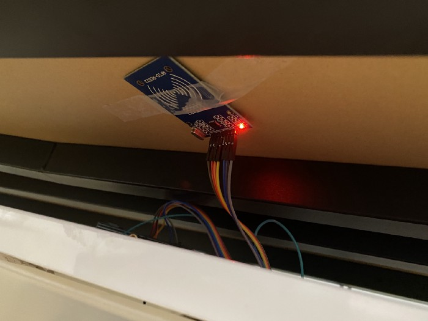
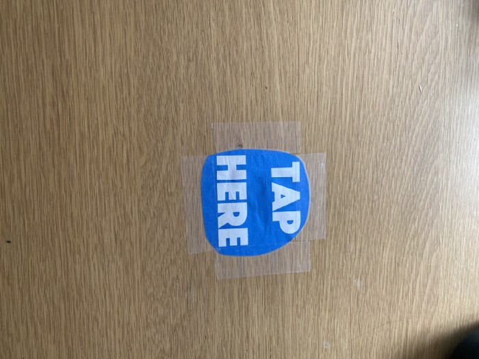

Archive | RFID
Raspberry Pi Room Controller Using RFID
This project started as a way to explore the RFID RC522 and turned into a room controller for music, lights, and LEDs.


It was one of the more fun hardware-focused projects I built and a good way to learn by actually wiring something useful together rather than only reading about components.
I ended up writing a full Medium walkthrough for it because it felt like the kind of project other people could actually recreate.